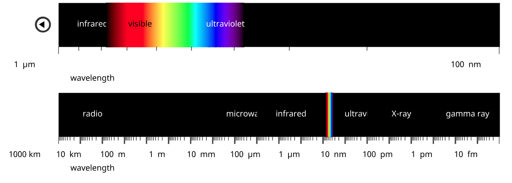

Spectrum explorer
Introduction
public domain, commons.wikimedia.org/wiki/
When white light is split into its component colours, we see part of the electromagnetic spectrum. But it contains more than just visible light.
Spectrum range
The visible spectrum covers a range in wavelength from 780nm (red) to 380nm (violet). Infrared radiation is found at longer wavelengths, and ultraviolet radiation at shorter wavelengths.
In fact, there are no limits to the electromagentic spectrum.
Radio waves longer than 1000Km are sometimes detected, and gamma rays with wavelengths shorter than 10fm are possible. However, this range includes all of the spectrum in common use.
How wide is the electromagentic spectrum?
Astronomy
Visible light creates patterns you see in the night sky with the naked eye or telescope. But astronomical objects emi much more than just visible light.
Astronomers use a wide range of tools to investigate the Universe in all parts of the electromagnetic spectrum. The next screen contains images od the M51 galaxy, and other astronomical objects, produced using different parts of the spectrum.
Radio emissions from M51 come from hot hydrogen gas and from fast-moving electrons. Images such as the one shown here are used by astronomers to explore distribution of magnetic fields in a galaxy.
This image of radio emissions from the Sun shows bright features (solar active regions) in two bands above and below the solar equator. Each active region corresponds to locations above sunspots where high density, hot material is confined by strong mganetic fields.
The Crab nebula is a remnant of a supernova explosion observed in 1504 AD by Chinese and Japanese astronomers. This radio image shows the expanding shockwave with a pulsar at the centre of the remnant.
This image shows how the nigh sky might appear if we had 'radio eyes'. Most of the bright pinpoint sources are quasars, far more distant than stars we see with visible light. The irregular ring-like shapes are supernova remnants.
The image of the M51 galaxy uses bluish tones to show microwave emissions from hydrogen. A visible light image of the galaxy has been superimposed. The microwave image shows structures that extend far beyond the galaxy's visible arms.
This image uses a combination of microwave and infrared to show the temperature of dust structures up to 500 light-years from the Sun. Red corresponds to temperatures of 10 degrees above absolute zero; white areas are a few tens of degrees hotter.
Microwaves (shown in orange) reveal a bridge of hot gas, 10 million light-years in length, that connects two galaxies. The galaxies were imaged in optical light using ground telescopes. The microwave image was captured by the Planck satellite.
This detailed image shows the oldest light in the Universe. Microwave radiation is left over from when the Universe was only 380,000 years old. The mottled pattern reflects tiny variations in temperature.
The dust-rich arms of spiral galaxy M51 are strong emitters of infrared radiation. This image from the Spitzer space telescope reveals detailed structure of the arms.
When viewed in infrared light, background stars shine through semi-transparent gas and dust in the Carina Nebula.
Observations in infrared capture detailed images of the outer edhes of the Milky Way. The large 'bubble' that makes up the centre of the image, and the smaller bubbles on its edge, show where massive stars have blasted away surrounding dust.
The Horsehead nabula is a star-forming region in the constellation Orion. Detailed internal structure is reveal.
The M51 galaxy is a pair of interacting galaxies: the dramatic spiral of M51A and its smaller irregular companion, M51B. This visible light image clearly shows M51A's spiral arms containing bright patches of star formation.
The Carina Nebula is one of the largest star-bith regions in the galaxy. Towers of cool hydrogen gas and dust obscure infant stars buried inside.
The Cat's Ete Nebula was on the first planetary nebula to be discovered. Planetary nebulae result from the death of a Sun-like star.
Repeat imaging of a small, ordinary patch of sky reveals galaxies that span back 13.2 billion years in time. The faintest galaxies are on th-billionth the brightness of that the human eye can see.
This ultraviolet image of M51 highlights hot, young stars that produce lots of ultraviolet energy. It shows that few stars are being produced in the companion galaxy, M51B, which appears as a dull red patch.
Massive solar flares such as the one visible near the centre of this image erupt regularly from the surface of the Sun. These can result in spectacular aurora on Earth.
This ultraviolet image of our neighbouring galaxy, the Large Magellanic Cloud, reveals many hot, young stars. About 1 million UV sources are represented in this image.
This ultraviolet view of Venus shows detailed cloud structure. The south pole is on the left. Moving to the right there are streaky clouds, a bright mid-latitude band and mottled clouds near the equator.
X-ray emissions from M51 clearly show the high energy cores of the two galaxies, M51A and M51B. The large number of point sources are probably associated with neutron stars and black holes.
This image shows a high energy X-ray outburst from a black hole. A supermassive black hole exists at the centre of the Milky Way
Eta Carina, a star between 100 and 150 times the mass of our Sun, has undergone a massive explosion. X-ray emissions are shown in orange. They are caused by ejected material heating surrounding gas to a million degrees.
The centre of the Milky Way contains thousands of X-ray sources. High-energy X-rays originate from Neutron stars, black holes and white dwarfs.
This image from the Fermi Gamma-ray Space Telescope shows most gamma rays reaching Earth originate from our own Milky Way galaxy. Other point sources show in this image originate from pulsars and active galaxies.
This is how the Moon would appear if you could see in gamma rays. Gamma rays are produced when particles from the Sun hit the Moon. The Moon is brighter than the Sun at this wavelength.
This illustration shows newly discovered gamma ray bubbles (in purple), that extend for 25,000 light years, either side of the Milky Way. The origin of the bubbles is unknown, but they may be remnants of an eruption from a supersized black hole at the centre of our galaxy.
High-speed particles from a supernova bombard surrounding gas which emits gamma rays. This composite image combines gamma rays (magenta), radio waves (yello) and infrared (red) from supernova remnant W44.
Medicine
The electromagnetic spectrum is widely used in medicine, both for diagnosis and treatment. Its use for different applications depends on properties of various parts of the spectrum.
Radio
Magentic resonace imaging (MRI) is a technique used to image soft tissue, such as the brain. The patient is placed in a strong magnetic field and pulses of radiowaves applied. The image is constructed by detecting the way protons in hydrogen atoms behave under these conditions.
Microwaves
This semi-transparent image of the heel bone was made using microwave imaging technology. Horizontal lines in the inset diagram show mwhere microwave imaging planes were set.
Infrared
A thermal image measures infrared radiation emitted by living and non-living bodies. In this image of a cat's head, warmer area are shown in shades of red, and cooler areas in green.
Visible
Visible light microscopy is used in medicine to study body tissues. Stains may be used to differentiate tissue types by colour. This image shows cells from a human spleen with areas of red and white pulp.

Ultraviolet
A sunny day and people head to the beach to get a sun tan. Ultraviolet light from the Sun causes the tan, but it's a delicate balancing act. Some exposure to UV light is necessary for Vitamin D production, but too mch UV causes skin and eye damage including skin cancer and cataracts.
X-ray
X-rays easily travel through soft tissue, but are absorbed by bone and other harder material. This chest X-ray clearly shows different density tissues.
Gamma ray
Positron Emission Tomography (PET) is a way of producing 3D images of functioning organs. A patient is injected with radioacive material that emits gamma rays. These are detected as the tracer makes its way through the body. This image shows a normal humna brain.